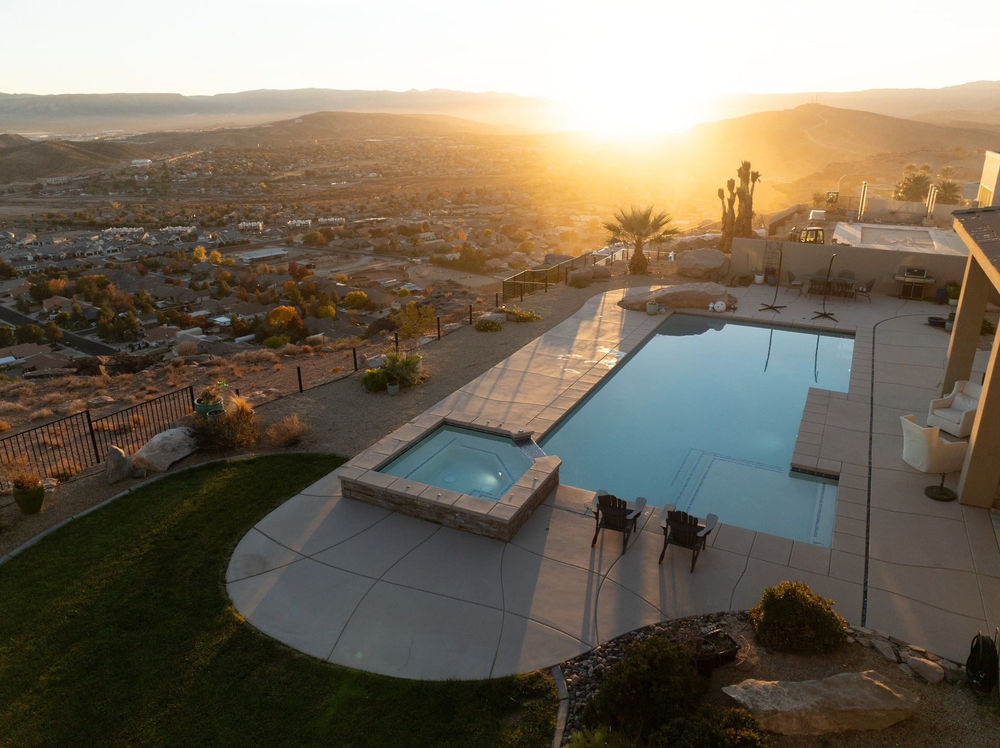
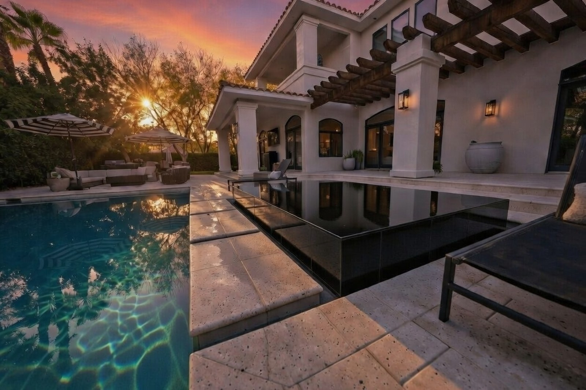
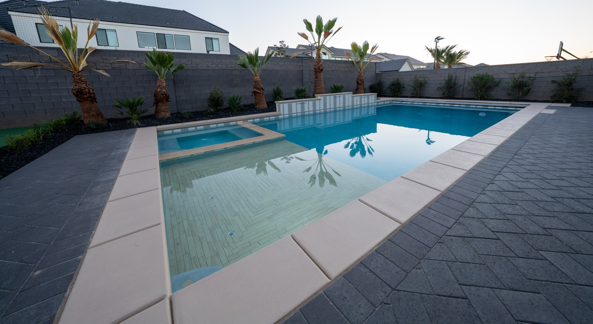
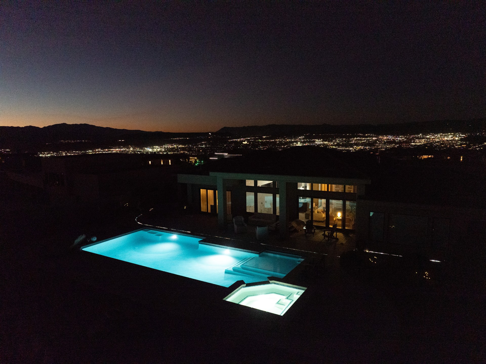

Every project Paragon takes on is designed and built with the same level of intention — from a single pool to a complete outdoor environment.

No templates. No catalog pools. Every Paragon pool starts with your site, your vision, and a blank page. We design around the architecture of your home, the topography of your land, and the way you actually intend to use the space.
From negative-edge designs and geometric lap pools to naturalistic resort-style pools with grottos and beach entries — if you can envision it, we can engineer and build it.
Every build includes full design development, 3D rendering, engineering, permitting, and a detailed scope of work before a single shovel breaks ground.

A well-designed spa isn't a separate element — it's integrated into the larger environment in a way that feels intentional. Paragon designs elevated spa experiences that complement the pool, the architecture, and the surrounding landscape.
We also build custom water features — sheer descents, rain curtains, water walls, bubblers, and vanishing edges — that transform a pool from a body of water into an experience.

The finest backyards are more than a pool. They're an environment — designed for how you live, built to a standard that matches the home it surrounds. Paragon designs and builds complete outdoor living spaces: covered patios, pergolas, outdoor kitchens, fire features, shade structures, and entertainment areas.
When we design your outdoor space, everything is coordinated — the pool, the hardscape, the living area, and the landscape — so it reads as one unified environment rather than a collection of separate projects.
Most pool contractors stop at the water. Their scope ends where the water ends, and you're left to figure out the rest. Paragon coordinates the full outdoor environment — which means we think about the yard, the hardscape, and the plant palette from the beginning of the design process, not as an afterthought.
In Southern Utah's desert climate, landscaping isn't just aesthetics — it's site management. Drainage, soil conditions, heat reflection off hardscape, and plant selection for the climate all matter. We build yards designed to thrive here, not just look good in photos the week they're finished.

Most pool companies build the pool — and stop there. Paragon doesn't. We design and build complete outdoor environments: pool, spa, hardscape, covered patio, outdoor kitchen, fire features, and full landscaping. One team. One point of accountability. One finished result that looks like it was always meant to be there.
This matters because the pool is only as impressive as what surrounds it. A great pool framed by unfinished yard or mismatched hardscape looks incomplete. When Paragon designs a full environment, every element is planned together — and the result reflects that coordination. It looks unified because it was built that way.
This is the standard Southern Utah's most prestigious custom home builders rely on Paragon to deliver — and it's available to discerning homeowners across the region.
Actual Paragon design renders — included with every project
Every Paragon project begins with a design process — not a sales presentation. We take the time to understand your property, your architecture, your lifestyle, and your vision before a single decision is made.
What you get before construction begins: a full 3D render of your completed environment, a detailed scope of work, itemized materials, and a timeline. You approve everything before we break ground. No surprises, no ambiguity.
The renders you see here are actual Paragon design drawings — the same quality of visualization every client receives, included as part of the design process.
Included in Every Paragon Project
No surprises. No guessing. Every Paragon project follows a defined process built around communication, quality, and accountability.
We learn about your vision, your site, your timeline, and your investment level. Honest and direct — no pressure.
We develop a detailed design with 3D renderings and a full scope of work. You approve every decision before construction begins.
Del personally oversees every phase. Regular updates, milestone communication, and no disappeared contractors.
A thorough walk-through with Del. Full documentation, warranty details, and ongoing support. You're not forgotten after the check clears.
Every project starts with a conversation. Tell us what you're envisioning — we'll tell you what's possible.